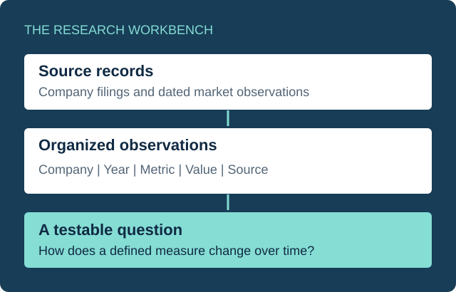

Total assets
Assets describe the resources reported on a company's balance sheet. Compare the same accounting measure across fiscal years.
Record the fiscal year and reporting unit.
A student guide to quantitative research
Explore how company financial statements and market prices can become a structured research dataset. Start with clear definitions, traceable sources, and questions you can test.
Explore the key metrics
Read the numbers carefully
A company's accounting records and its stock market valuation answer different questions. Keep the date, unit, and definition with every observation.
Assets describe the resources reported on a company's balance sheet. Compare the same accounting measure across fiscal years.
Record the fiscal year and reporting unit.
Market capitalization is the share price multiplied by shares outstanding. Its value depends on the measurement date.
Match prices and share counts to the same date.
Book equity reflects an accounting measure of owners' interest. State whether a dataset uses total equity or common shareholders' equity.
Use a consistent definition across companies.
From an idea to a research plan
This site's planned research example covers U.S. stocks from 2011 through 2025, with a target universe of 500 companies. Those numbers describe the project scope; a verified dataset is not published here yet.
Start with a source you can inspect
The SEC's EDGAR APIs provide company submissions and structured financial facts. The documentation explains how the data is organized.
Read the SEC EDGAR API documentation